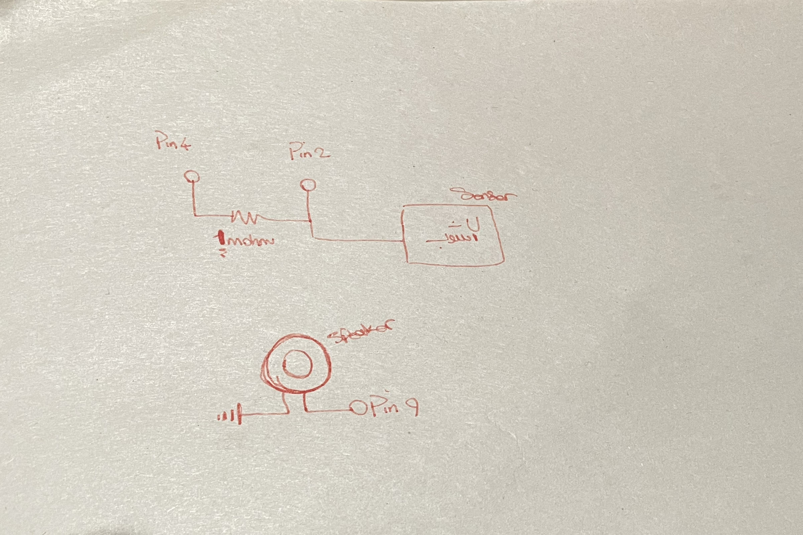

Final Projecrt!
Picture of the circuit (Inside of the back)!

Picture of the circuit (Inside of the front)!

Picture of the circuit (Outside of the back)!

Schematic of the circuit!

#include
CapacitiveSensor cs_4_2 = CapacitiveSensor(4,2); // 1 megaohm resistor between pins 4 & 2, pin 2 is sensor pin
int Speaker = 9; //connect speaker to pin 9
void setup(){ //
cs_4_2.set_CS_AutocaL_Millis(0xFFFFFFFF); // turn off autocalibrate on channel 1 - just as an example Serial.begin(9600);
Serial.begin(9600);
}
void loop(){
long start = millis();
long total1 = cs_4_2.capacitiveSensor(30);
Serial.print(millis() - start); // check on performance in milliseconds
Serial.print("\t"); // tab character for debug window spacing
Serial.println(total1); // print sensor output 1
int thisPitch = map(total1, 20, 18000, 120, 1500);
if (total1 > 90) {tone(9, thisPitch, 10);
}
else {
noTone(9);
}
// play the pitch:
delay(10); // arbitrary delay to limit data to serial port
}